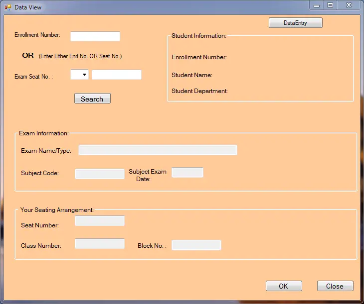

Web Develop Projects :
- Personal portfolio : Source Code
- Institute Web Page : Source Code
- Web Page For Online Classes : Source Code
Welcome to my digital haven! üåê Explore the intricacies of my professional journey on my personalized
portfolio website, crafted with love using HTML, CSS, JavaScript, and Bootstrap. Dive into my
world
as I showcase my certificates, a testament to my commitment to continuous learning.
Discover the projects that define my skill set, reflecting my passion for innovation and
problem-solving. From coding challenges to real-world applications, each project unveils a
facet of
my expertise. Navigate through my skill section to uncover the diverse palette that shapes my
capabilities, from programming languages to creative design.
Connect with me effortlessly using the contact section. Whether you're a collaborator, potential
employer, or just someone sharing similar interests, I'm eager to hear from you. Let's bridge the
virtual gap and explore the possibilities together.
This website isn't just a compilation of code and content; it's a reflection of my journey,
aspirations, and the dedication I bring to everything I do. Welcome to my virtual space – where
technology meets personality.

Explore the digital campus, a cutting-edge educational hub where knowledge meets
innovation. Our institute's website, meticulously designed with HTML, CSS, JavaScript, and
Bootstrap, serves as a gateway to a world of academic excellence.
Uncover the essence of our institute through comprehensive sections detailing our mission, vision,
and values. Navigate through the course offerings, where each program is crafted to empower students
with real-world skills and knowledge. From foundational courses to advanced specializations, our
curriculum caters to diverse learning needs.
Delve into our faculty section to meet the brilliant minds behind our academic prowess. With a
commitment to fostering a dynamic learning environment, our experienced instructors bring a wealth
of expertise to the classroom.

Embark on a transformative educational journey with our online learning platform, meticulously
developed using HTML, CSS, JavaScript, and Bootstrap. Welcome to a virtual classroom where
education
meets flexibility and convenience.
Explore our diverse array of courses, thoughtfully designed to cater to various interests and skill
levels. Each course page provides comprehensive details on curriculum, instructors, and
prerequisites, ensuring you make informed decisions about your academic path.
Navigate seamlessly through the user-friendly interface to discover hassle-free payment options.
From secure online transactions to transparent fee structures, we prioritize simplicity and
accessibility in managing your educational investments.
Stay informed about enrollment deadlines, upcoming classes, and essential announcements through our
intuitive dashboard. Engage with fellow learners through discussion forums and collaborative
projects, fostering a sense of community in the virtual space.
Ready to embark on your learning journey? The enrollment process is just a few clicks away. Take
charge of your education, explore our courses, and step into a world where knowledge knows no
boundaries. Welcome to the future of online learning!
Java Development Projects :
- Password Generator using Java : Source Code
- Web Medical Management System : Source Code
- Exam Seating Arrangement System in Java : Source Code 

With more and more hacking going on, it's important for everyone to make strong and unique passwords for their different accounts to keep them safe. Trying to remember all those passwords is really hard, and writing them down isn't smart. That's why people use password generators to create strong and complicated passwords for their accounts. If you want to make your own password generator using Java, there's a function that can help. When users create accounts on new websites, you can use this program to generate a secure password. To make it even safer, you can set it up to save passwords in an encrypted way. To do this, you'll need to learn the basics of cryptography and Java Cryptography Architecture.


Welcome to the future of healthcare with "Virtual Medicine Home," a revolutionary JAVA project
designed to bridge the gap between patients and healthcare providers. In an era where visiting
hospitals poses challenges, our application ensures seamless access to medical services from the
comfort of your home.
The patient-centric platform enables users to schedule online consultations with their preferred
specialists. Doctors, equipped with the Doctor module, can prescribe medications, provide e-therapy,
and access patients' comprehensive medical records, including lab reports. This digital interface
ensures a secure and efficient exchange of crucial health information.
In addition to virtual consultations, the app facilitates connections with potential organ and blood
donors, fostering a community-driven approach to healthcare support. This feature promotes
collaboration and extends a lifeline to those in need.
The application's dual modules, Admin and Doctor, ensure the smooth operation of the online
programming framework. The Admin module governs the platform's overall functionality, while the
Doctor module empowers healthcare professionals to connect with and care for their patients
remotely.
"Virtual Medicine Home" is not just a project; it's a lifeline during unprecedented times. Embrace
the power of technology for a healthier, more connected future. Your well-being is just a click
away.
To do this well, you need a good understanding of Object-Oriented Programming (OOPs) concepts. Also,
we'll use Java Swing to build this application. The application should have the following features:
Experience streamlined exam logistics with our Java project—Automated Seating Arrangement. Admin and students login to access tailored functionalities. Admins manage student data, specifying factors like branch, semester, and subject, alongside inputting total students and available class details. The system dynamically generates a seating plan based on row and roll numbers, ensuring a fair and efficient exam environment. This user-friendly solution optimizes the exam process, delivering convenience and order to academic settings. Welcome to a hassle-free era of automated exam seating!
Python Development Projects :
- Robo Speaker : Source Code
- Coding Decoding : Source Code
- Question & Answer Program : Source Code

Introducing our Python-based Text-to-Speech (TTS) project! Seamlessly transforming written content into spoken words, our innovative solution brings text to life. With a user-friendly interface and efficient Python code, this TTS project ensures accessibility and convenience. Experience the power of language as your words take on a new dimension with just a click. Elevate your projects, presentations, and applications with our cutting-edge TTS technology. Explore the future of communication through the harmony of code and speech.

The provided Python code defines a simple text encoder and decoder using the base64 encoding and decoding functions. The program begins by importing the base64 module. It then defines two functions, encode_text and decode_text, which utilize the base64 encoding and decoding methods to convert a given text into a base64-encoded format and vice versa. The main function serves as the entry point for the program, prompting the user to input a text to be encoded. After encoding the text, the program asks the user if they want to decode the encoded text. If the user chooses to decode, the program performs the decoding and displays the result. The code is encapsulated within an "if name == "main":" block, ensuring that the main function is executed only when the script is run directly, not when it is imported as a module. Overall, the code provides a basic interactive interface for encoding and optionally decoding text using base64.

Embark on an exhilarating journey of knowledge with our Python-based Quiz Game, reminiscent of the iconic KBC! Engage your intellect as the program presents challenging questions and four intriguing options. Choose wisely, for every correct answer propels you to the next question, while a wrong response concludes the game, revealing your accumulated winnings. The captivating blend of Python programming and quiz dynamics ensures an immersive experience, making learning entertaining. Track your progress and relish the thrill of accumulating virtual wealth. Elevate your Python skills and test your trivia prowess with each line of code. Whether you're a coding enthusiast or a quiz aficionado, our interactive program promises an exciting blend of learning and entertainment. Let the quiz begin, and may your knowledge soar to new heights!